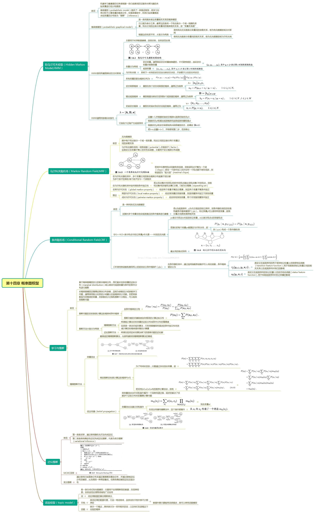
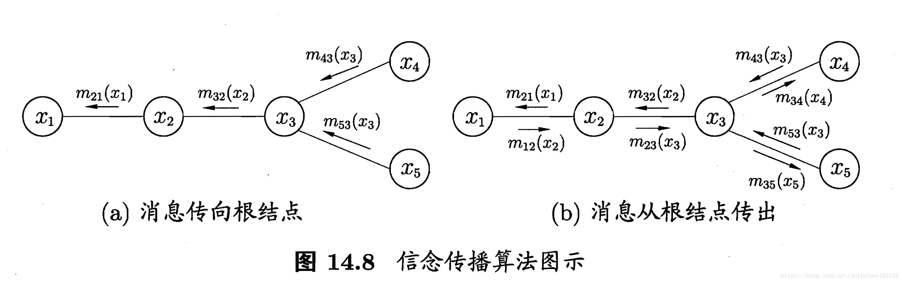
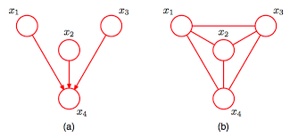
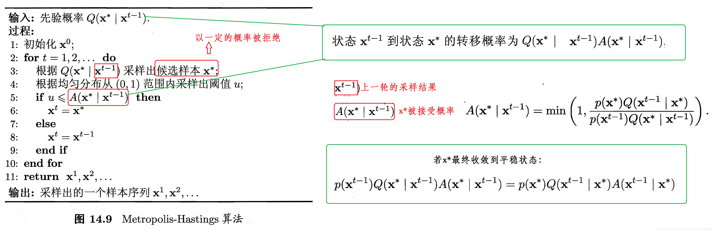

1. 引言
机器学习中最重要的任务，可以看做根据已观测的数据证据（如训练样本）来对感兴趣的未知变量（如分类标签）进行估计和推测。概率图模型（probabilistic graphical model, PGM），是一种学习任务的框架描述，它将学习任务归结为计算变量的概率分布[1]。
推断（inference）：在概率模型中，利用已知变量推测未知变量的分布的过程即为推断。在学习任务中，不仅仅是预测问题可以看做是一个推断过程，典型的“有因溯果”的逆向推导也可以看做是推断过程。
从推断的角度出发，给定一个问题中关心的变量集合$Y$，可观测变量集合$O$，其他变量集合为$R$，两种不同学习模型的策略可以概括如下：
- 生成（generative）模型：其考虑的是联合概率分布$P(Y,O,R)$，并由此推断条件概率$P(O \mid Y)$
- 判别（discriminative）模型：其考虑的是条件概率分布$P(Y,R \mid O)$，并由此推断条件概率$P(O \mid Y)$
想要直接通过概率求和规则的方式来消去变量$R$并得到条件概率$P(O \mid Y)$，复杂度高达$O(n^{|Y|+|R|})$，假定每个变量取值有$n$种。同时，各个随机变量的复杂联系也使得通过训练样本来获知变量分布的参数往往十分困难。在这种情况下，概率图模型，提出了使用图的方式来表达变量相关概率关系，以用于实现高效的推断和学习算法。
2. 体系
2.1 相关理论分类
- PGM表示理论
- 研究如何利用概率网络中的独立性来简化联合概率分布的方法表示。
- 概率图模型的表示分为参数和结构两部分，需要分别进行确定。
- PGM学习理论
- 概率图模型学习算法分为参数学习与结构学习。
- 参数学习算法根据数据集是否完备而分为确定性不完备和随机性不完备下的学习算法
- 针对结构学习算法特点的不同，结构学习算法归纳为基于约束的学习、基于评分搜索的学习、混合学习、动态规划结构学习、模型平均结构学习和不完备数据集的结构学习。
- PGM推断理论
- 贝叶斯网络与马尔可夫网络中解决概率查询问题的精确推理算法与近似推理算法
- 确切推断(exact inference)的复杂度取决于模型的tree width。对于很多实际模型，这个复杂度可能随着问题规模增长而指数增长。
- 信念传播（belief propagation）：将变量消去法中的求和操作看做一个消息传递过程，消息传递相关的计算被限制在图的局部进行。
- 人们退而求其次，转而探索具有多项式复杂度的近似推断(approximate inference)方法：
- 基于平均场逼近（mean field approximation）的变分推断（variational inference）：EM算法就属于这类型算法的一种特例。
- 蒙特卡罗采样（Monte Carlo sampling）：蒙特卡罗方法通过对概率模型的随机模拟运行来收集样本，然后通过收集到的样本来估计变量的统计特性（比如，均值）。
2.2 模型分类
按照概率图中变量关系的不同，概率图模型可以大致分为两类：
- 贝叶斯网络：有向图模型，使用有向无环图表达关系（通常，变量间存在显式的因果关系）
- 马尔科夫网络：无向图模型，使用无图表达关系（通常，变量间存有关系，但是难以显式表达）
有时候，也将同时存有有向边和无向边的模型，如条件随机场（conditional random field）和链图（chain graph），单独看做一类局部有向模型。
贝叶斯网络可以分为静态贝叶斯网络和动态贝叶斯网络。相比于静态贝叶斯网络，动态（dynamic）贝叶斯网络主要用于时序数据建模（如语音识别、自然语言处理、轨迹数据挖掘等）。其中，一种结构最简单的动态贝叶斯网络就是隐马尔可夫模型（hidden markov model, HMM）。
一般来说，贝叶斯网络中每一个结点都对应于一个先验概率分布或者条件概率分布，因此整体的联合分布可以直接分解为所有单个结点所对应的分布的乘积。而对于马尔可夫网络，由于变量之间没有明确的因果关系，它的联合概率分布通常会表达为一系列势函数（potential function）的乘积。通常情况下，这些乘积的积分并不等于1，因此，还要对其进行归一化才能形成一个有效的概率分布——这一点往往在实际应用中给参数估计造成非常大的困难。
按照表示的抽象级别不同，概率图模型可以分为：
- 基于随机变量的概率图模型，如贝叶斯网、马尔可夫网、条件随机场和链图等；
- 基于模板的概率图模型．这类模型根据应用场景不同又可分为两种：
- 暂态模型，包括动态贝叶斯网（Dynamic Bayesian Network, DBN）和状态观测模型，其中状态观测模型又包括线性动态系统（Linear Dynamic System, LDS）如卡尔曼滤波器，还有隐马尔可夫模型（Hidden Markov Model, HMM）；
- 对象关系领域的概率图模型，包括盘模型（Plate Model，PM）、概率关系模型（Probabilistic Relational Model, PRM）和关系马尔可夫网（Relational Markov Network, RMN）。
2.3 一个思维导图
对应于周志华著《机器学习》第14章的思维导图（请下载进行查看）
上图引用自[6]。
3. 概率图模型的通用解释
以下引用自[3]
机器学习的一个核心任务是从观测到的数据中挖掘隐含的知识，而概率图模型是实现这一任务的一种优雅手段。其巧妙地结合了图论和概率论：
- 从图论的角度，PGM是一个图，包含结点与边。结点可以分为两类：隐含结点和观测结点。边可以是有向的或者是无向的。
- 从概率论的角度，PGM是一个概率分布，图中的结点对应于随机变量，边对应于随机变量的dependency或者correlation关系。
给定一个实际问题，我们通常会观测到一些数据，并且希望能够挖掘出隐含在数据中的知识。怎么用PGM实现呢？我们构建一个图，用观测结点表示观测到的数据，用隐含结点表示潜在的知识，用边来描述知识与数据的相互关系，最后获得一个概率分布。给定概率分布之后，通过进行两个任务：inference（给定观测结点，推断隐含结点的后验分布）和learning（学习这个概率分布的参数），来获取知识。PGM的强大之处在于，不管数据和知识多复杂，我们的处理手段是一样的：建一个图，定义一个概率分布，进行推断和学习。
4. 概率图模型的参数估计和推理算法
4.1 参数估计
参数学习的目的，是在给定贝叶斯网络结构的情况下，根据已有的观测数据，对网络参数进行调整来最好地对观测数据进行描述的过程。
- 对于贝叶斯网络中某个结点的条件概率分布（即条件概率表），可以通过计算训练数据中时间发生的次数来统计，这样获得的参数能够最大化被观测到的数据的可能性。
- 对于马尔科夫网络，上述计数方法没有统计学上的支持因而会得到次优的参数。一般而言，对于马尔科夫网络的参数估计，其指导思想为梯度下降，即定义一些描述分布的参数，然后使用梯度下降来寻找能最大化被观测数据可能性的参数值。
4.2 推断
当模型参数被确定后，我们需要在新的数据上进行使用，也就是进行相关的概率推断。使用推断，可以求解一些非常重要的问题
- 边缘推断（marginal inference）：寻找某个特定变量（结点）在不同取值上的概率分布。
- 后验推断（posterior inference）：给定某些显变量$v_E$，其观测取值为$e$，求某些隐藏变量$v_H$的后验分布$P(v_H \mid v_E = e)$。
- 最大后验推断（maximum-a-posterior inference）：给定某些显变量$v_E$，其观测取值为$e$，求某些隐藏变量$v_H$具有最高概率的参数配置。
边缘分布是指对无关变量求和或积分后得到的结果。例如，在马尔科夫网中，变量的联合分布被表示为极大团的势函数乘积，于是，给定参数$\Theta$求解某个变量$x$的分布，就变成联合分布中其他无关变量进行积分的过程，这称之为“边缘化”。
无论是上述哪一种推断，我们可以按照引用[1]中的形式进行较为一般的形式化定义：
假设图模型对应的变量集$\mathbf{x} = \{ x_1, \ldots, x_N \}$能够分为$\mathbf{x}_E$和$\mathbf{x}_F$两个不相交的变量集。推断问题的目标就是计算边缘概率$P(\mathbf{x}_F)$或者条件概率$P(\mathbf{x}_F \mid \mathbf{x}_E)$。由条件概率有：
$P(\mathbf{x}_F \mid \mathbf{x}_E) = \frac{P(\mathbf{x}_E, \mathbf{x}_F)}{P(\mathbf{x}_E)} = \frac{P(\mathbf{x}_E, \mathbf{x}_F)}{\sum_{\mathbf{x}_F}P(\mathbf{x}_E, \mathbf{x}_F)}$
由于联合概率$P(\mathbf{x}_E, \mathbf{x}_F)$可以基于概率图模型获得，因此，腿短问题的关键在于如何高效地计算边缘分布，即
$P(\mathbf{x}_E) = \sum_{\mathbf{x}_F}P(\mathbf{x}_E, \mathbf{x}_F)$
解答这些问题，既有精确推断算法，也有近似推断算法（推断在计算上很困难！在某些特定类型的图中我们可以相当高效地执行推断，但一般而言图的计算都很难。所以我们需要使用近似算法来在准确度和效率之间进行权衡）。
- 精确推断算法：希望能够计算出目标变量的边缘分布或条件分布的精确值
- 其实质上是一类动态规划算法，利用图模型描述的条件独立性来消减计算目标概率值所需的计算量[1]；
- 一般情况下，算法的计算复杂度随最大团规模的增长而指数增长，适用范围有限；
- 变量消除和信念传播是两种较为常见的精确推断算法；
- 近似推断算法：在较低的时间复杂度下获得原问题的近似解
- 一般较为常用；
- 采样和变分推断是两种常见的近似推断算法。
4.2.1 变量消除（Variable Elimination）
变量消除算法的实现是，在求解某个随机变量的边缘分布时，通过消去其他变量的方式来获取（对联合概率进行其他变量的求和，再基于条件独立性转化为相关变量的条件概率的连乘）。
- 具体而言，它通过利用乘法对加法的分配律，把多个变量的积的求和问题，转化为对部分变量交替进行求积和求和的问题。
- 这种转化，使每次求和与求积运算都在局部进行，仅仅和部分变量有关，简化了计算。
- 其明显缺点在于，若需要计算多个边缘分布时，重复使用变量消除将会产生大量冗余计算[1]。
4.2.2 信念传播（Belief Propagation）
信念传播算法也成为sum-product算法，其具体的介绍也可以参见因子图介绍。相比于变量消除算法，其将变量概率的求和操作看做一个消息传递（message passing）过程，较好地解决了求解多个边缘分布时存在的重复计算问题。
形式化地，假定函数$m_{ij}(x_j)$表示变量概率求和的一部分中间结果，其$i$表示对于变量$x_i$求和，而$j$表示该项中剩下的变量为$x_j$。例如，$\sum_{x_1}P(x_1)P(x_2 \mid x_1)$可以表示为$m_{12}(x_2)$。
那么，信念传播算法的求和操作可以通过公式
$m_{ij}(x_j) = \sum_{x_i}\psi(x_i, x_j)\prod_{k \in {n(i) \setminus j}}m_{ki}(x_i)$
来消去变量$x_i$。
在上述函数中，$\psi(x_i, x_j)$表示一个变量$x_i$和$x_j$的关联性的公式，可以是条件概率或者联合概率分布等；$n(i)$表示概率图中与$x_i$相邻的结点变量；这个公式实际意味着，我们对$x_j$的边缘概率的计算中，只考虑了$x_i$对其传送的一个消息，而$x_i$接收自其他变量间$n(i) \setminus j$的消息在后面一项中进行表示；这样，每次消息传递仅和$x_i$以及其邻接结点直接相关，计算可以在图的局部完成。
注意，在信念传播中，此时函数$m_{ij}(x_j)$可以表示为结点$x_i$向$x_j$传递的一个消息。
- 在信念传播算法中，一个结点只有在接收来自其他所有结点的消息后才能向另一个结点发送消息，其结点的边缘分布正比于其接收的消息的乘积：
$P(x_i) = \prod_{k \in n(i)}m_{ki}(x_i)$
- 若概率图中没有环，则信念传播算法经过两个步骤可以完成所有消息传递，进而计算所有变量的边缘分布：
- 第一步，指定一个根结点，从所有叶结点开始向根结点传递消息，直到根结点收到所有邻接结点的消息；
- 第二步，从根结点开始向叶结点传递消息，直到所有叶结点均收到消息。
信念传播算法
上图中，令$x_1$为根结点，则$x_4$和$x_5$为叶结点。基于这些传递在各结点间的消息（每一个为和式），可以推断任何一个结点的边缘概率。
注意，信念传播算法针对的是马尔科夫随机场展开的。当给定一个贝叶斯网络时，需要通过特定手段将其转化为一个等价的马尔科夫随机场，同时需要使这个马尔科夫场的结构最小化。这个过程被称之为道德化（moralization）。道德化是将一个DAG转化为无向图的简单图论操作：将任意一个孩子结点的两个未连接结点用一条无向边连接，并将剩余的边的方向去除的过程。
道德化过程
4.2.3 基于采样的近似推断
本小节介绍的基于采样的推断是一种随机化近似方法；而下一节介绍的变分推断则是一种确定性近似方法。
在精确推断中，求解某些概率分布，主要是为了根据其期望来进一步对目标变量的期望进行计算。因此，基于采样的近似推断考虑直接计算或者逼近目标变量的分布，而不直接对概率分布进行推断。
基于大数定律，如果能够根据概率分布采样足够多的样本，计算其对应的目标变量的期望，就可以逼近目标变量的概率分布。
概率图模型中最常用的采样即马尔科夫链蒙特卡洛（Markov Chain Monte Carlo, MCMC）采样。以下对其原理进行简介。
给定连续变量$x \in X$，及其概率密度函数$p(x)$，$x$在某个区间$A$的概率可以根据积分计算：
$P(A) = \displaystyle\int_A p(x)\, \rm{d}x$
如果有一个关于$x$的函数$f: X \mapsto \mathbb{R}$，那么$f(x)$的期望可以计算为：
$p(f) = \mathbb{E}_{p}[f(X)] = \displaystyle\int_x f(x)p(x)\, \rm{d}x$
在上式中，如果$x$替换为一个多元的高维变量$\mathbf{x}$且服从十分复杂的分布（$p(\mathbf{x})$很复杂），那么以上期望就很难进行计算。
此时，MCMC考虑先构造出服从分布$p$的独立同分布随机变量$\mathbf{x}_1, \ldots, \mathbf{x}_N$，从而得到上式的无偏估计：
$\tilde{p}(f) = 1/N \cdot \sum_{i = 1}^{N} f(\mathbf{x}_i) $
然而，构建独立同分布随机变量在分布$p$复杂的情况下也很困难。MCMC方法的关键在于：
通过构造“平稳分布为$p$的马尔科夫链”来产生样本 - 若马尔科夫链运行时间足够长（收敛到平稳状态），则此时产生的样本$\mathbf{x}$近似服从于分布$p$。
如何判定马尔科夫链到达平稳状态？给定马尔科夫链$T$的状态转移概率为$T(\mathbf{x}’ \mid \mathbf{x})$，$t$时刻状态分布为$p(\mathbf{x}^{t})$，若某个时刻马尔科夫链满足平稳条件：
$p(\mathbf{x}^{t})T(\mathbf{x}^{t-1} \mid \mathbf{x}^{t}) = p(\mathbf{x}^{t-1})T(\mathbf{x}^{t} \mid \mathbf{x}^{t-1})$
则$p(\mathbf{x})$是该马尔科夫链的平稳分布，马尔科夫链在满足该条件时已经收敛到平稳状态。
也就是说，MCMC方法首先构造一条马尔科夫链，使其收敛至平稳分布恰好是待估计参数的后验分布。然后，可以通过该马尔科夫链产生符合后验分布的样本，利用这些样本可以用来估计分布参数。
MH（Metropolis-Hastings）算法是MCMC采样的重要代表，吉布斯采样可以认为是MH采样的一种特例。关于采样的内容，今后会系统地谈一谈。以下给出MH采样的算法解释。
Metropolis-Hastings算法
4.2.4 变分推断（Variational Inference）
关于变分推断的理解和讨论，可见引用[7]。
变分推断的思想的要点可以概括如下：
- 使用已知的简单分布来逼近需推断的复杂分布；
- 限制近似分布的类型；
- 得到一种局部最优、但具有确定解的近似后验分布。
简单地说，原始目标是根据已有数据推断需要的分布$p$；当$p$不容易表达、不能直接求解时，可以尝试用变分推断即，寻找容易表达和求解的分布$q$，当$q$和$p$的差距很小的时候（技术上而言，是KL散度距离最小），$q$就可以作为$p$的近似分布，成为输出结果。
以下先结合文献[1] 15.5.2节中的一个例子来解答下变分推断的学习目标、及其在学习任务中具体的思想和用途。
假定隐变量$\mathbf{z}$直接和$N$个可观测的变量$\mathbf{x} = x_1, \ldots, x_N$相连，那么，所有可观测的变量的联合分布的概率密度函数可以表示为：
$p(\mathbf{x} \mid \Theta) = \prod_{i=1}^{N}\sum_{\mathbf{z}} p(x_i, \mathbf{z} \mid \Theta)$
对数似然可以写为：
$\ln p(\mathbf{x} \mid \Theta) = \sum_{i=1}^{N} \ln \{ \prod_{\mathbf{z}} p(x_i, \mathbf{z} \mid \Theta) \}$
那么，上述例子中的推断和学习任务分别是在给定观测样本$\mathbf{x}$的情况下计算出概率分布$p(\mathbf{z} \mid \mathbf{x}, \Theta)$和分布的参数$\Theta$。
在含有隐变量$\mathbf{z}$时，上述问题的求解可以使用EM算法：
- E步，根据$t$时刻参数$\Theta^{t}$对$p(\mathbf{z} \mid \mathbf{x}, \Theta^{t})$进行推断，并对以上的联合似然函数$p(\mathbf{x}, \mathbf{z} \mid \Theta)$进行计算；
M步，基于E步计算的结果进行最大化寻优，即在$\mathbf{z}$被当前参数和观测确定的情况下，对上述的对数似然求最大化：
$\Theta^{t+1} = \arg\max\limits_{\Theta} \mathcal{Q}(\Theta; \Theta^{t}) = \arg\max\limits_{\Theta} \sum\limits_{\mathbf{z}} p(\mathbf{z} \mid \mathbf{x}, \Theta^{t}) \ln p(\mathbf{x}, \mathbf{z} \mid \Theta)$
上式中，最大化的一项，实际上是对数联合似然函数$\ln p(\mathbf{x}, \mathbf{z} \mid \Theta)$在分布$p(\mathbf{z} \mid \mathbf{x}, \Theta^{t})$下的期望。
当分布$p(\mathbf{z} \mid \mathbf{x}, \Theta^{t})$和变量$\mathbf{z}$的后验分布相等时，上式中最大化的期望值$\mathcal{Q}(\Theta; \Theta^{t})$可以近似于对数似然函数。
因此，通过E步和M步的迭代，最终可以获得稳定参数$\Theta$，从而也可以获得$\mathbf{z}$的分布。
但是，$p(\mathbf{z} \mid \mathbf{x}, \Theta^{t})$未必一定是$\mathbf{z}$的真实分布，而是一个近似值。若将近似分布表示为$q(\mathbf{z})$，则可以有下列公式成立：
$\ln p(\mathbf{x}) = \mathcal{L}(q) + \text{KL}(q \parallel p)$
$\mathcal{L}(q) = \displaystyle\int q(\mathbf{z}) \ln \{ \frac{p(\mathbf{x},\mathbf{z})}{q(\mathbf{z})} \} \rm{d}\mathbf{z}$
$\text{KL}(q \parallel p) = - \displaystyle\int q(\mathbf{z}) \ln \frac{p(\mathbf{z} \mid \mathbf{x})}{q(\mathbf{z})} \rm{d}\mathbf{z}$
上述公式看起来很复杂，但是试着把后面两个公式带入到上面公式中，就可以发现其实是贝叶斯公式$p(\mathbf{x}) = \frac{p(\mathbf{x}, \mathbf{z})}{p(\mathbf{z} \mid \mathbf{x})}$在符合$q$分布的变量$\mathbf{z}$在积分上的一种表达形式。
接下来，考虑到$\mathbf{z}$可能模型复杂而难以完成E步中$p(\mathbf{z} \mid \mathbf{x}, \Theta^{t})$的推断，此时，就可以借助变分推断，假设$\mathbf{z}$服从一个简单的分布：
$q(\mathbf{z}) = \prod_{i=1}^{M}q_i(\mathbf{z}_i)$
即假设复杂的多变量$\mathbf{z}$可拆解为一系列相互独立的多变量$\mathbf{z}_i$。并且，还可以假设每个分布$q_i$相对简单或有很好的结构。
考虑到上述对数似然的形式，我们假设每个分布符合指数族分布（易于积分求解），那么对于每一个独立的变量子集$\mathbf{z}_j$，其最优的分量分布$q^{\star}_j$应该满足：
$\ln q^{\star}_j(\mathbf{z}_j) = \mathbb{E}_{i \neq j}[\ln p(\mathbf{x}, \mathbf{z})] + \text{const}$
$\mathbb{E}_{i \neq j}[\ln p(\mathbf{x}, \mathbf{z})] = \displaystyle\int p(\mathbf{x}, \mathbf{z}) \prod_{i \neq j} q_i \rm{d}\mathbf{z}_i$
$\text{const}$为一个常数。
对上述公式进行转换，可以得到一个最优分量分布的表达式：
$q^{\star}_j(\mathbf{z}_j) = \exp (\mathbb{E}_{i \neq j}[\ln p(\mathbf{x}, \mathbf{z})]) / (\displaystyle\int \exp (\mathbb{E}_{i \neq j}[\ln p(\mathbf{x}, \mathbf{z})]) \rm{d}\mathbf{z}_j$
通过上式可以看出，在对变量$\mathbf{z}_j$的最优分布$q^{\star}_j$估计时，融合了除$\mathbf{z}_j$外其他变量$\mathbf{z}_{i \neq j}$的信息，这是通过联合似然函数$p(\mathbf{x}, \mathbf{z})$在$\mathbf{z}_j$之外的隐变量求期望得到的，因此变分推断也被成为平均场（mean field）逼近方法。
实践中对于变分推断的使用：
- 首先，对隐变量进行拆解，假设各个分量服从何种分布
- 再利用上述最优分布求解，对隐变量的后验概率分布进行估计
- 通过EM方法迭代求解，得到最终概率图模型的推断和参数估计
对于变分推断的理解较为困难，更多内容可以参见变分推断介绍和引用[1]中14.5.2小节中的公式推导。
学习资料
- Judea Pearl: Networks of Plausible Inference.
- Daphne Koller: Probabilistic Graphical Models: Principles and Techniques.
- CMU-course 10708 Probabilistic Graphical Models.
- Coursera | Probabilistic Graphical Models.
- Charles Sutton and Andrew McCallum: An Introduction to Conditional Random Fields.
- Graphical Models in a Nutshell.
引用
- 1.《机器学习》，周志华著，清华大学出版社. ↩
- 2.概率图模型，百度百科. ↩
- 3.https://www.zhihu.com/question/23255632/answer/56330768 ↩
- 4.Graphical Models in a Nutshell. ↩
- 5.读懂概率图模型，Prasoon Goyal. ↩
- 6.机器学习笔记，周志华《14 概率图模型》. ↩
- 7.如何简单易懂地理解变分推断. ↩